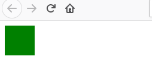
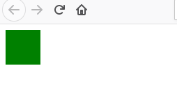

CSS Specificity เหมือนกับการเทียบลำดับความสำคัญของ selector ใน css
ซึ่งปกติแล้ว css จะมีการอ่าน code เหมือนภาษาอื่นๆ ทั่วไป คืออ่านจาก
บนลงล่าง แต่ถ้าเขียน code โดยที่มีการทำลำดับความสำคัญก็อาจจะทำให้
สิ่งที่เขียนไปไม่แสดงผลได้ เช่น
 ผลลัพธ์ที่ได้

จะเห็นได้ว่าถึงแม้ class selector จะอยู่ล่างสุด แต่ที่แสดงผล
กลับเป็นของ id selector เพราะ id selector มีความสำคัญมากกว่าทำให้
class ไม่สามารถไปเขียนทับได้ ซึ่งลำดับความสำคัญของ selector
มีดังนี้
Inline Style > Id Selector > Class Selector > Element(html tag)
ผลลัพธ์ที่ได้

จะเห็นได้ว่าถึงแม้ class selector จะอยู่ล่างสุด แต่ที่แสดงผล
กลับเป็นของ id selector เพราะ id selector มีความสำคัญมากกว่าทำให้
class ไม่สามารถไปเขียนทับได้ ซึ่งลำดับความสำคัญของ selector
มีดังนี้
Inline Style > Id Selector > Class Selector > Element(html tag)